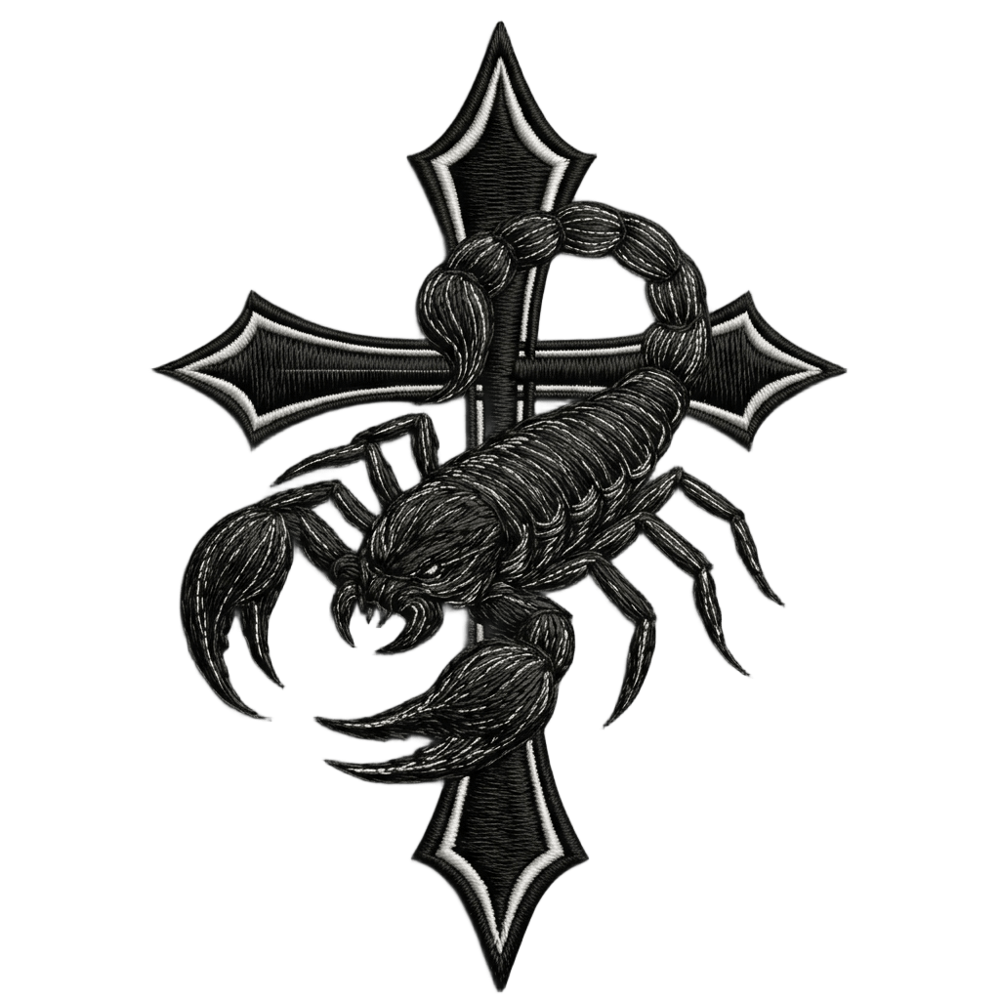
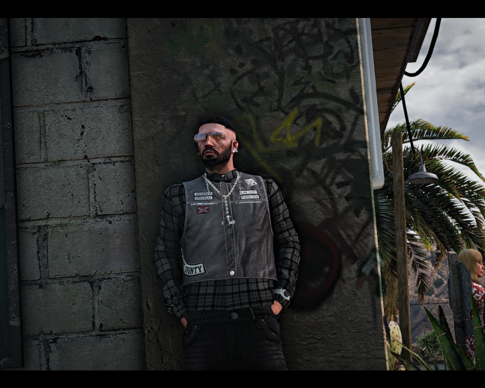

SCORPION MC
GÜÇ VE SADAKAT
HAKKIMIZDA
Senelerdir süren rol tutkumuz bizleri farklı renklere bürüdü. Bu renkler bizlere kattığı şeyler ile birlikte geride kaldı... 2025 yılının Mayıs ayında verdiğimiz bir kararla kendi adımızı yazdık. Kendi renklerimize ve kendi benliğimizle biz olduk. Geçmişte nasılsak şimdi de öyleyiz ve hâlâ bir aradayız. Bizi biz yapan şeylerin bilinciyle yolumuza devam ediyoruz. SCORPION MC hikayesi, yeleği ve tüzüğüyle bizim tarafımızca oluşturulmuştur. Gerçek kişi, kurum ve kuruluşlarla hiçbir ilgimiz yoktur.
GALERİ
FiveM'de birden farklı sunucuda çekilen fotoğrafları galeri üzerinden inceleyebilirsiniz.
GALERİYE GİT